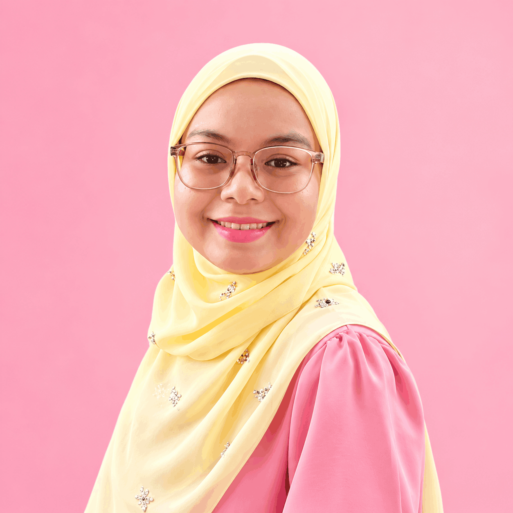

01 · HOME VISIT
Konsultasi Penyusuan
Panduan mengenai latching, posisi penyusuan, rutin feeding dan isu umum penyusuan secara bersemuka.
Membantu ibu melalui perjalanan awal keibuan dengan panduan penyusuan yang praktikal, sokongan yang empati dan langkah yang sesuai mengikut keperluan ibu serta bayi.


Susuwithfatin diasaskan untuk memberi ruang yang lebih selesa kepada ibu mendapatkan panduan penyusuan yang jelas, praktikal dan berempati. Setiap konsultasi memberi perhatian kepada situasi sebenar ibu dan bayi — bukan sekadar teori — supaya langkah yang dicadangkan lebih mudah diamalkan dalam rutin harian.
Fatin membantu ibu dalam isu seperti teknik penyusuan, latching dan posisi, bengkak susu, saluran susu tersumbat, flange fitting untuk penggunaan pam yang lebih selesa, serta panduan asas berkaitan tangisan dan tidur bayi berusia 0 hingga 3 bulan. Konsultasi boleh dijalankan melalui home visit di sekitar KL dan Selangor atau secara online mengikut keperluan.
Setiap ibu mempunyai pengalaman dan cabaran yang berbeza. Sesi bermula dengan memahami keadaan semasa sebelum cadangan diberikan.
Fokus diberikan kepada langkah yang boleh dipraktikkan di rumah dan disesuaikan dengan rutin ibu serta bayi.
Konsultasi diwujudkan sebagai ruang yang tenang untuk ibu mendapatkan penjelasan, sokongan dan hala tuju yang lebih jelas.
Setiap sesi disesuaikan mengikut kebimbangan semasa, keadaan ibu dan bayi serta jenis sokongan yang paling sesuai.
Panduan mengenai latching, posisi penyusuan, rutin feeding dan isu umum penyusuan secara bersemuka.
Sokongan praktikal untuk membantu ibu memahami langkah yang boleh diambil apabila payudara terasa bengkak atau tidak selesa.
Panduan berkaitan penyusuan, pumping dan penjagaan harian apabila ibu mengalami tanda saluran susu tersumbat.
Membantu ibu mendapatkan saiz flange yang lebih sesuai supaya sesi pumping lebih selesa dan mudah diteruskan.
Panduan asas untuk memahami signal bayi, corak tangisan, soothing dan rutin tidur pada fasa awal kelahiran.
Untuk ibu yang perlukan panduan tetapi tidak dapat mengatur home visit, sesi online boleh diatur mengikut kesesuaian.
“Ibu tidak perlu melalui setiap cabaran penyusuan seorang diri.”
Sokongan yang tepat pada masa yang sesuai boleh membantu ibu memahami keadaan dengan lebih tenang dan membuat keputusan yang lebih jelas untuk langkah seterusnya.
Kongsi kebimbangan utama anda, lokasi dan jenis konsultasi yang diinginkan melalui WhatsApp.
Atur home visit atau konsultasi online berdasarkan kesesuaian dan keperluan semasa.
Situasi anda akan dibincangkan dengan lebih terperinci sebelum cadangan praktikal diberikan.
Anda pulang atau tamat sesi dengan langkah seterusnya yang lebih jelas untuk dipraktikkan.
Hubungi Fatin melalui WhatsApp untuk berkongsi keadaan semasa anda dan semak ketersediaan konsultasi.